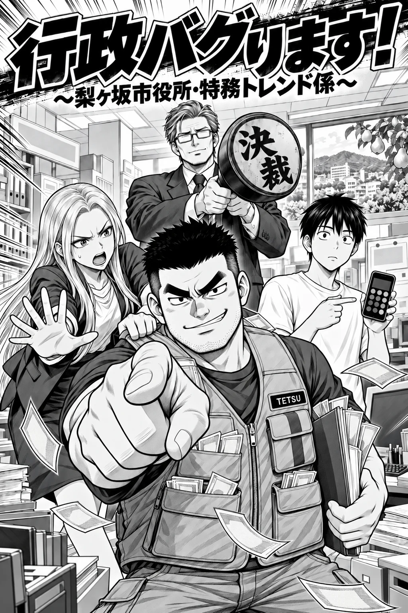
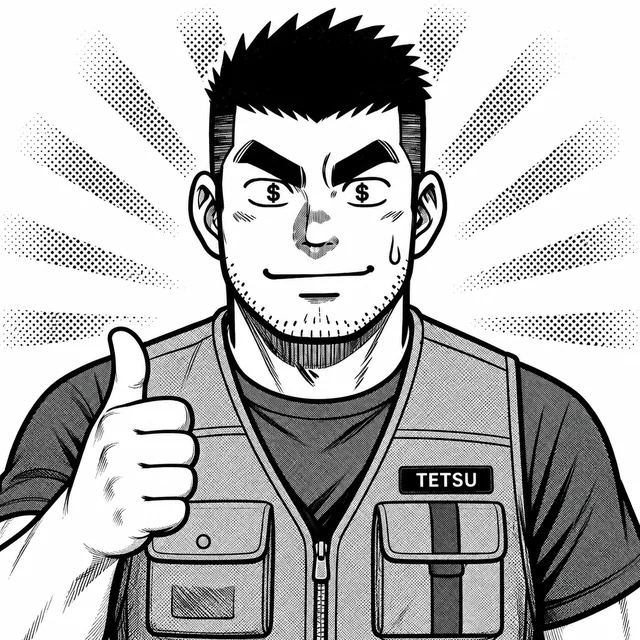
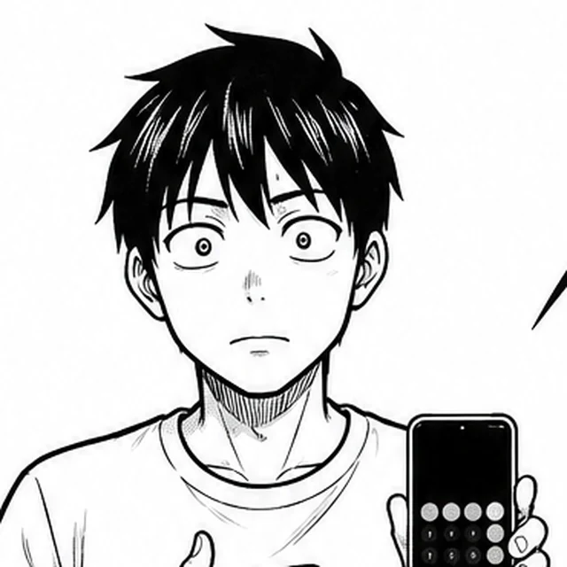

舞台は、市役所の地下
「特務トレンド係」へようこそ
梨ヶ坂市役所の地下には、予算も権限もない謎の部署がある。市民の困りごとが持ち込まれるたび、金と昼寝のことしか頭にない公務員・源田テツが儲けのにおいを嗅ぎつけて動き出す。
やり方はだいたい無茶。それでも、困りごとは不思議と片づいていく――。
- 1話5分ほどどの話からでも読める、1話完結です。
- 笑って、ひとつ分かる行政のしくみを、騒動の中で楽しめます。
- 全部無料登録もログインも要りません。

1話完結・お役所ギャグ漫画
～梨ヶ坂市役所・特務トレンド係～
動機は不純。
なぜか市民は助かる。
金と楽がしたい公務員・源田テツが、制度と技術を一夜漬け。今日も市役所の地下から、妙な解決策が飛び出します。
気になる事件からどうぞ
公開中の3話。どの話からでも楽しめます。
舞台は、市役所の地下
梨ヶ坂市役所の地下には、予算も権限もない謎の部署がある。市民の困りごとが持ち込まれるたび、金と昼寝のことしか頭にない公務員・源田テツが儲けのにおいを嗅ぎつけて動き出す。
やり方はだいたい無茶。それでも、困りごとは不思議と片づいていく――。
クセの強い市役所チーム

主役・係員
「これ……金になるぞ！」
金とサボることへの執念で動く公務員。儲け話を見つけると、制度でも最新技術でも一晩で覚える。人助けは、だいたい副産物。
係のリーダー・テツの上司
「テツ、それ本当に大丈夫なんでしょうね？」
論理的で強気な、係のリーダー。テツを止めにかかる唯一の人。言っていることは正しいが、だいたい一歩遅い。

高校生バイト
「時給が出るなら、やります。残業はしません」
割に合えばやる、合わなければやらない現代っ子。テツの計画に金額で乗る。残業しないのは法律の裏付けつき。
課長
「源田くん。……いえ、源田さん」
決して怒鳴らない課長。叱るときほど丁寧語になり、眼鏡のレンズが白く光る。「源田さん」と呼ばれたら要注意。